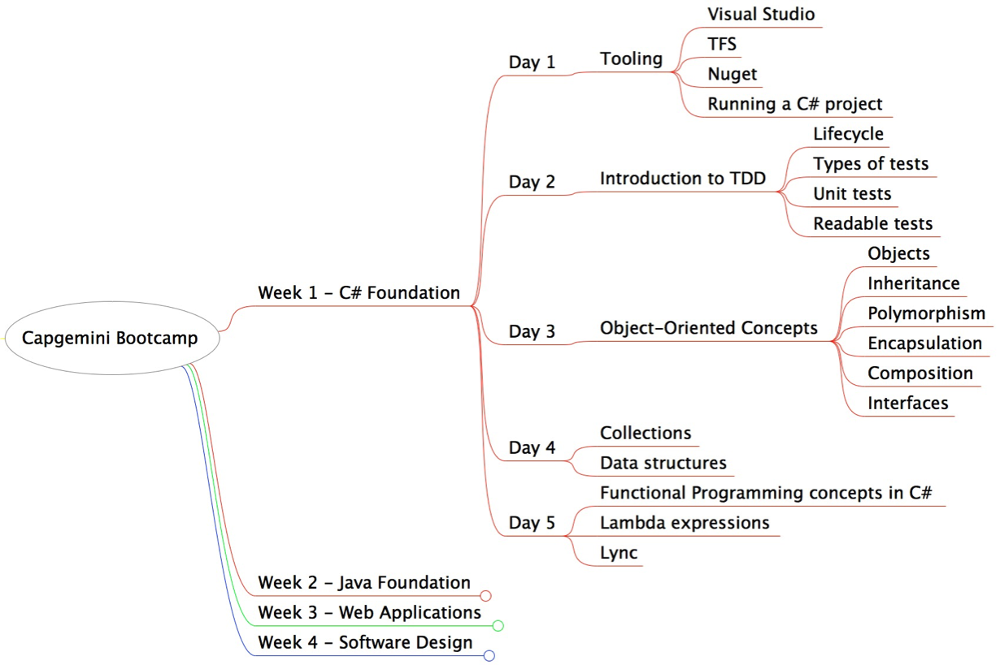
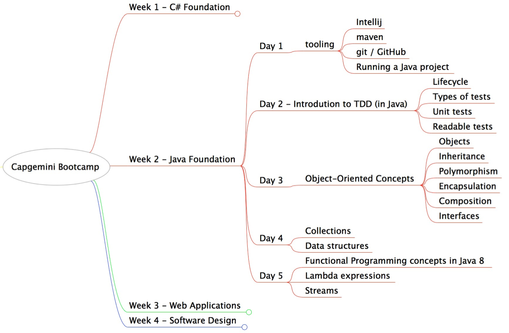
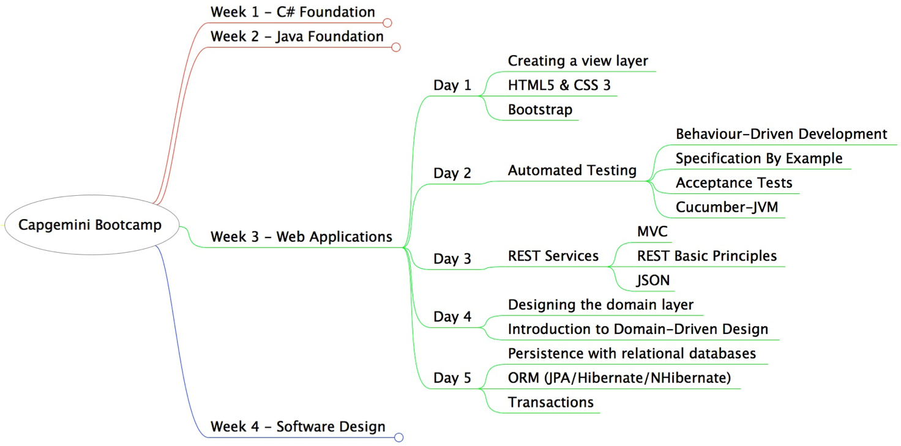
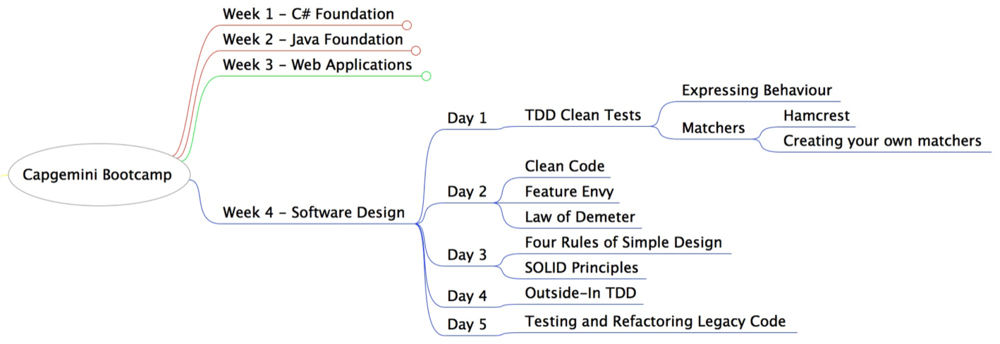
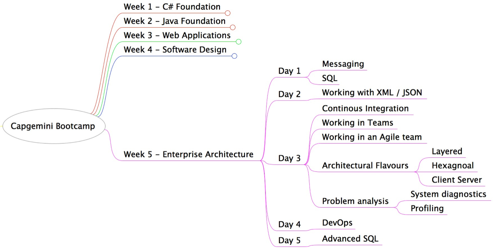

by ...
Introduction to tools and practices widely used in the industry in order to provide a strong foundation for work on C# projects.

Introduction to tools and practices widely used in the industry in order to provide a strong foundation for work on Java projects.

Exposure to the full software development lifecycle of a web application, user requirements to data persistence.

Prepare graduates to design well-crafted software and improve legacy code, emphasising Test-Driven Design and refactoring.

Prepare graduates so they understand high-level architecture and tools used in large enterprise systems.
